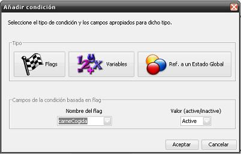

Edición de los flags
Los flags se pueden considerar como indicadores de una propiedad en
concreto. El sentido de dicha propiedad viene dado por el nombre del
flag. Si está activo, la propiedad se cumple.
Los flags permiten dar un sentido narrativo a los juegos <e-Adventure> .
La forma de dar dicha narración radica en el uso de flags (también de variables)
dentro de las condiciones, en las cuales se comprueba si estan activados
o desactivados un conjunto de flags.
Por ejemplo, definimos un flag llamado "telefonoCogido".
Asociamos una condición a la acción examinar de un objeto "telefono",
en la que dicho flag deberá estar activado para que se lancen los
efectos asociados a la acción. Si cuando pretendemos examinar el objeto "telefono"
el flag está activado, se lanzarán los efectos asociados a la acción, y
sino no ocurrirá nada.
Una condición simple
Supongamos que tenemos un juego con dos objetos: una chuleta de carne y
un pescado.
La idea es que el jugador sólo pueda coger el pescado cuando se haya
cogido previamente la carne. En nuestra aventura traducimos esa
condición al "lenguaje de flags".
Para ello definimos un flag "carneCogida", que estará inactivo hasta que
la carne sea cogida. En ese momento el flag pasará a estar activo, y por
tanto el pescado estará a disposición del jugador.
Veamos el proceso completo:
-
Primero necesitamos añadir un flag nuevo. Para ello nos vamos al menú
de Capítulo que encontramos en la barra superior. Allí seleccionamos
la opción "Editar flags del capítulo" (abreviado ctrl. + F).
-
A continuación se mostrará una ventana como la que indica la figura
siguiente. Pulse en el botón "Añadir flag" y escriba "carneCogida".
Pulse Aceptar y se creará un nuevo flag con 0 referencias.

-
Puede usarse este diálogo para añadir o borrar flags (y variables) del
capítulo (los flags son únicos para cada capítulo). Sin embargo, si se
quiere borrar un flag primero debe tener 0 referencias (hablamos por
referencias a flags de aquellos elementos del juego que utilizan ese
flag, ya sea en una condición o en un efecto).
-
Además hay que tener en cuenta algunas restricciones a la hora de
definir flags: no se permiten espacios en blanco y el primer carácter
debe ser una letra.Una vez el flag ha sido creado, ya se pueden hacer
referencias a él.
-
Entonces podemos ir a nuestro objeto "Pescado" y añadir una nueva
acción coger. Expandir el nodo del objeto > Botón derecho en
"Acciones" > Añadir acción coger. Después de eso pulse en el botón
"Editar condiciones" situado en el panel de la acción. Se abrirá un
diálogo para editar las condiciones.
-
Presione el botón "Añadir condición" y se le preguntará que flag
formará la condición y en qué estado debe estar para que la condición
se evalúe como cierta (activo o inactivo). En nuestro caso
seleccionamos "activo" y el flag "carneCogida".

-
Nótese que la lista desplegable donde se selecciona el flag es
editable. De esta manera podemos escribir a mano el nombre del flag.
Si este no existe aún, se creará automáticamente, evitando así
recurrir al menú de capítulo tan a menudo.